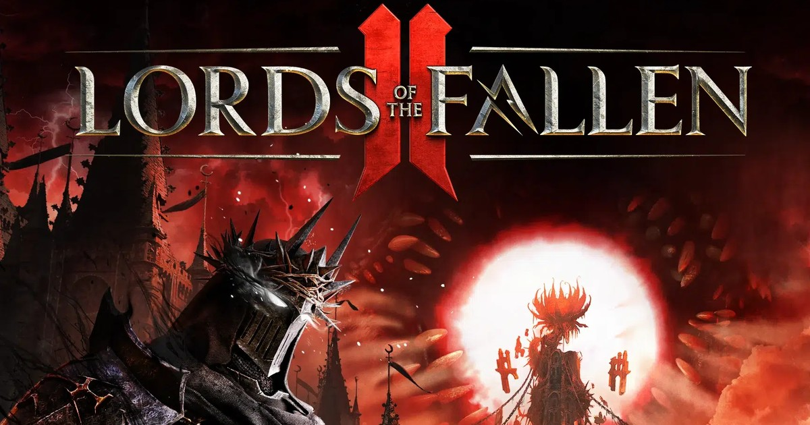

Lords of the Fallen II lands in April 2027 — CI Games narrows the window, exact date coming in December
CI Games has narrowed Lords of the Fallen II's launch window from the first quarter of 2027 to April, with the exact date to be announced in December. The soulslike sequel arrives on PS5, Xbox Series X|S, PC and Nintendo Switch 2.

Disclosure: this post contains affiliate links. I earn a commission on qualifying purchases.
Soulslike fans finally have a month to circle. CI Games has announced that Lords of the Fallen II will launch in April 2027, narrowing a window that has sat at "the first quarter of 2027" since the summer. The exact date is still to come — CI Games plans to announce it in December — but the vague quarter is now a specific month, and the wait has a shape.
It is the second schedule move for the sequel. The game was originally slated for fall 2026 before CI Games CEO Marek Tymiński announced on June 23 that it would slip into early 2027, a delay the studio framed as time to strengthen the game — and one that also moved it out of the most crowded holiday release window in years, with Grand Theft Auto VI looming over everything. April keeps that distance: the game lands well clear of the holiday pileup and a full five months after GTA 6's launch.
What the extra time bought
The delay has not been quiet. Earlier this month, CI Games released episode 11 of its "Lifting the Veil" developer series — "Steel & Sorcery" — the most extensive combat reveal for the sequel so far, and it showed exactly what the extra months are going toward.
The headline change is the arsenal. The sequel carries nearly 30 distinct weapon movesets, almost double the 15 in the 2023 game, with sharper differences between one-handed and two-handed styles. Players can now switch between two melee loadouts in the middle of a combo without breaking the attack string, and the rework extends to magic and ranged play as well, with instant spell casting, dedicated stances and new counterattack options. The goal, per chief creative officer Ryan Hill, is for players to feel like "a Swiss Army sword" — an arsenal to draw from at any moment rather than one build committed to from the start.
The game itself is a standalone sequel set a century after the 2023 reboot, in a kingdom being consumed by the growing influence of the Umbral realm. The dual-world structure returns — Axiom, the realm of the living, and Umbral, the realm of the dead — as does the lantern that lets players cross between them. It is built in Unreal Engine 5 and developed by Hexworks, the studio behind the 2023 game.
The money behind it
CI Games has also spent the fall locking down the sequel's funding. The publisher recently closed a €28.6 million financing round to finish development, and says the sequel is now fully funded through launch, with the total budget including marketing sitting below €55 million. The company also ended its Epic Games Store exclusivity arrangement, which means the game launches on Steam as well — a meaningful change for a PC audience that pushed back hard on the original exclusivity deal.
The 2023 game gives the sequel something to live up to: CI Games says it has been played by more than 8 million people. That is the audience the April window is aimed at, and the reason the exact date — coming next month — will be watched closely by soulslike fans who have already waited through one delay.
Lords of the Fallen II launches in April 2027 on PlayStation 5, Xbox Series X|S, PC via Steam and the Epic Games Store, and Nintendo Switch 2.
Sources: Lords of the Fallen II delayed to April 2027 (UPDATE) (GoNintendo, via Insider Gaming) · Lords of the Fallen 2 dodges crowded fall 2026, delayed to 2027 (Polygon) · Lords of the Fallen II nearly doubles its weapon movesets in new combat reveal (Inven Global) · Lords of the Fallen II Reveals Major Combat Improvements as CI Games Secures €28.6 Million Loan (Digital Citizen)
Watch
Source: Lords of the Fallen 2 - Official Steel & Sorcery Combat Gameplay Trailer (IGN) — CI Games' November 4 combat gameplay trailer, showing the overhauled melee, magic and ranged systems.
Gear up: Razer — mice, keyboards, headsets and laptops.